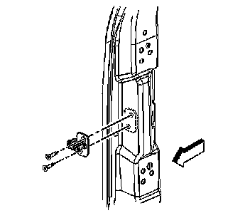

Front Door Striker: Adjustments
DOOR LOCK STRIKER ADJUSTMENT
To determine if striker adjustment is required, proceed as follows:

1. Make certain the door is properly aligned within the door opening before proceeding with the striker adjustment.
2. Close the door onto the striker and note if the door drags on the striker causing the door to move upward or downward upon contact with the striker. Also note the closing effort to fully engage the latch.
3. Using a soft marker, mark around the striker for reference of the original position. Loosen the striker.
4. Move the striker to eliminate drag on the striker and door latch and to achieve the proper door position within the door opening. Start with the up/down position, then position the striker to achieve proper alignment to the door opening. Set the in/out adjustment for the proper door seal engagement making sure the door closing efforts are correct.
5. NOTE: Refer to Fastener Notice.
Tighten the striker-to-body bolts.
Tighten the door striker-to-body bolts to 27 N.m (20 lb ft).